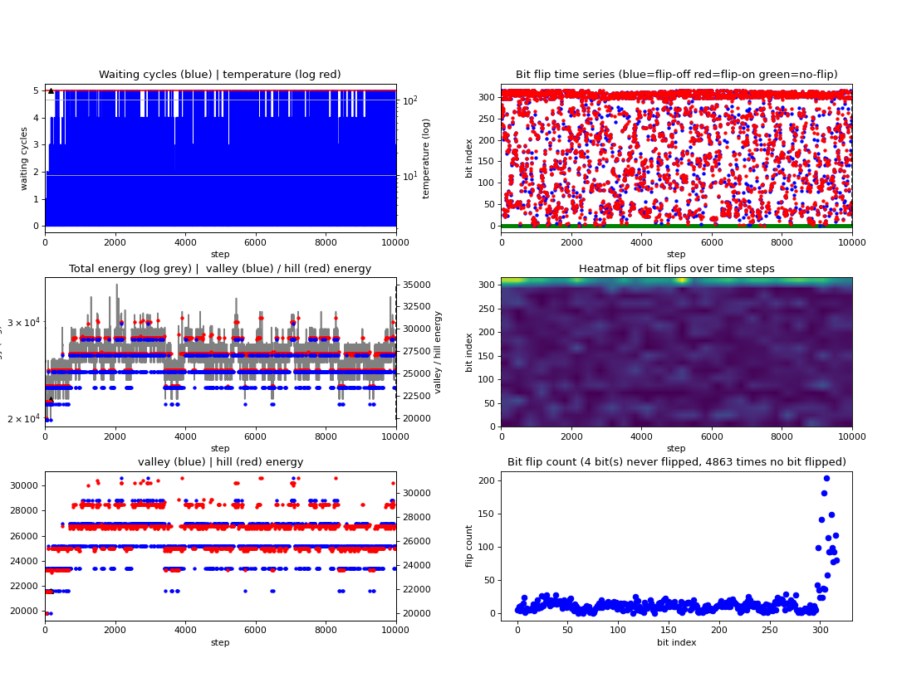
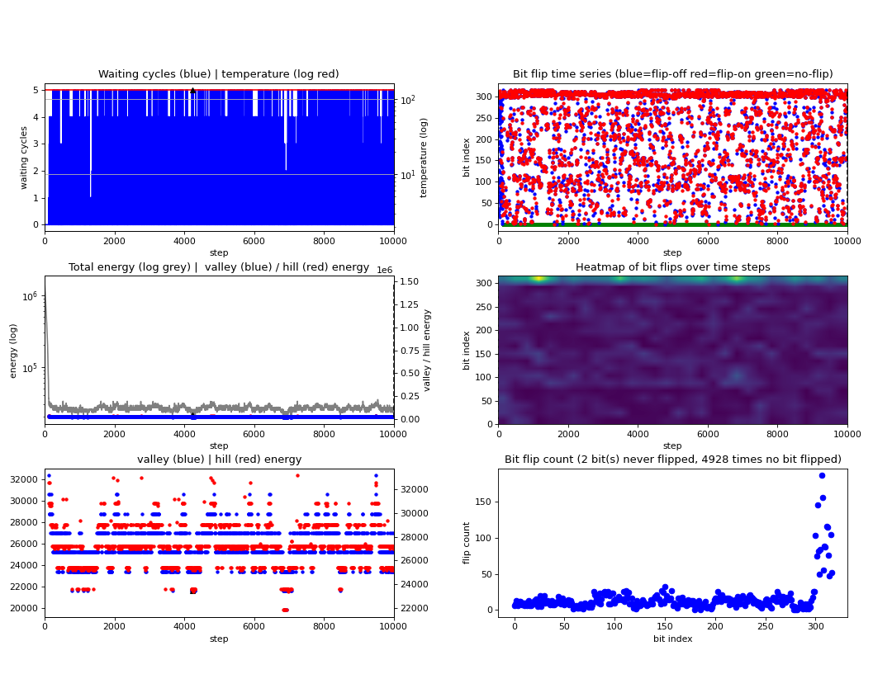

Guidance Configuration#
The concept of constant bits in DADK already helps to reduce the problem size by eliminating bit variables from the problem for which the value is already known before solving the respective optimization problem.
In many optimization problems, a very good solution is already known but there might be an even better solution which
requires some or all variables to change their value. In order to still make use of the already known sub-optimal solution,
DADK and Digital Annealer support to set the sub-optimal solution as initial state, i.e. as guidance solution.
Each bit of the initial configuration can be set to True or False, not specified bits are set randomly. Note that
the guidance config has to be consistent with the usage of one hot groups and constant bits.
See the corresponding class is PartialConfig for details.
Remember the worker assignment example of the previous sections with objective to minimize the number of working workers, programmed as
from dadk.BinPol import *
days = ['Monday', 'Tuesday', 'Wednesday', 'Thursday', 'Friday']
D = len(days)
shifts = ['Early', 'Late', 'Night']
S = len(shifts)
workers = ['Adam1', 'Bob1', 'Charly1', 'Dave1', 'Earl1',
'Adam2', 'Bob2', 'Charly2', 'Dave2', 'Earl2',
'Adam3', 'Bob3', 'Charly3', 'Dave3', 'Earl3',
'Adam4', 'Bob4', 'Charly4', 'Dave4', 'Earl4']
W = len(workers)
blocked = [('Monday', 'Night', 'Adam1'),
('Wednesday', 'Late', 'Charly2'),
('Friday', 'Early', 'Earl2')]
constant_bits_x_bits = np.full((D, S, W), -1, dtype=np.int8)
for day, shift, worker in blocked:
constant_bits_x_bits[days.index(day), shifts.index(shift), workers.index(worker)] = 0
x_bit_array_shape = BitArrayShape(name='x', constant_bits=constant_bits_x_bits)
demand = {
'Monday': {'Early': 2, 'Late': 5, 'Night': 3},
'Tuesday': {'Early': 1, 'Late': 5, 'Night': 3},
'Wednesday': {'Early': 2, 'Late': 5, 'Night': 3},
'Thursday': {'Early': 1, 'Late': 5, 'Night': 3},
'Friday': {'Early': 2, 'Late': 5, 'Night': 1}}
y_bit_array_shape = BitArrayShape(name='y', shape=(W,))
var_shape_set = VarShapeSet(x_bit_array_shape,
y_bit_array_shape)
BinPol.freeze_var_shape_set(var_shape_set)
weight = 2000
penalty_qubo = BinPol()
for d, day in enumerate(days):
for s, shift in enumerate(shifts):
penalty_qubo.add_exactly_n_bits_on(n=demand[day][shift],
bits=[('x', d, s, w) for w, worker in enumerate(workers)],
scalar=weight)
for w, worker in enumerate(workers):
for d, day in enumerate(days):
penalty_qubo.add_most_1_bit_on(bits=[('x', d, s, w) for s, shift in enumerate(shifts)],
scalar=weight)
for w, worker in enumerate(workers):
for d, day in enumerate(days):
for s, shift in enumerate(shifts):
penalty_qubo.add_term(weight, ('x', d, s, w))
penalty_qubo.add_term(-weight, ('x', d, s, w), ('y', w))
weight = 1800
qubo = BinPol()
for w, worker in enumerate(workers):
qubo.add_term(weight, ('y', w))
upper_shift_limit = 4
inequalities = []
for w, worker in enumerate(workers):
tmp_qubo = BinPol().add_term(-upper_shift_limit)
for d, day in enumerate(days):
for s, shift in enumerate(shifts):
tmp_qubo.add_term(1, ('x', d, s, w))
inequalities.append(Inequality(qubo=tmp_qubo, lambda_value=1000))
Determining a Guidance Configuration using a Greedy Approach#
We compute an initial solution by a simple Greedy approach.
In particular, we start with only one worker in a list current_workers and assign it to shifts.
Whenever no worker is available in current_workers for a shift, we add a new worker to current_workers.
The code for this Greedy approach is the following:
guidance = PartialConfig()
# initialize all bits to zero
for w, worker in enumerate(workers):
guidance.set_bit(('y', w), 0)
for d, day in enumerate(days):
for s, shift in enumerate(shifts):
guidance.set_bit(('x', d, s, w), 0)
# initialize dictionary for workers with shifts assigned at days;
# -1 means no shift on a day is assigned
shifts_of_worker = {w: [-1 for d, day in enumerate(days)]
for w, worker in enumerate(workers)}
# initialize dictionary for workers with number of shifts assigned; at the beginning
# no shift is assigned to any worker
nr_shifts_of_worker = {w: 0 for w, worker in enumerate(workers)}
# sort workers which requested shifts off to the back
workers_in_F = [d_s_w[2] for d_s_w in blocked]
sorted_workers = [w for w, worker in enumerate(workers) if worker not in workers_in_F]\
+ [workers.index(worker) for worker in workers_in_F]
# initialize list of workers which can currently be assigned shifts
current_workers = [sorted_workers.pop(0)]
# assign shifts to workers
# if no worker is available for a shift, pop first worker from sorted_workers
# and append to current_workers
for d, day in enumerate(days):
for s, shift in enumerate(shifts):
nr_workers = 0
while nr_workers < demand[day][shift]:
no_shift_for_workers_left = True
for w in current_workers:
if nr_workers < demand[day][shift]\
and nr_shifts_of_worker[w] < upper_shift_limit\
and shifts_of_worker[w][d] == -1\
and (day, shift, worker) not in blocked:
# worker w can be assigned to shift
guidance.set_bit(('x', d, s, w), 1)
shifts_of_worker[w][d] = s
nr_shifts_of_worker[w] += 1
nr_workers += 1
no_shift_for_workers_left = False
if nr_workers < demand[day][shift] and no_shift_for_workers_left:
if sorted_workers != []:
# no worker in current_workers could be assigned to shift,
# extend current_workers
current_workers.append(sorted_workers.pop(0))
else:
break
# set y bits to 1 for all workers which have been assigned shifts
for w, worker in enumerate(workers):
if nr_shifts_of_worker[w] > 0:
guidance.set_bit(('y', w), 1)
It results in a sub-optimal solution but the solution is valid and already good.
Determine Solver Settings#
Before we solve the optimization problem with guidance configuration, we solve it without guidance solution in order to determine the temperature settings.
from dadk.QUBOSolverCPU import QUBOSolverCPU
solver = QUBOSolverCPU(number_runs=1,
number_iterations=10000,
temperature_sampling=True,
temperature_interval=1,
random_seed=42)
solution_list = solver.minimize(qubo + penalty_qubo,
inequalities=inequalities)
solution = solution_list.get_minimum_energy_solution()
print(solution.energy)
The automatic temperature determination computes temperatures as temperature_start = 7.92882207e+02,
temperature_end = 1.32766812e+02 and offset_increase_rate = 3.36100946e+02.
The energy of the computed solution is retrieved by print(solution.energy) and evaluates to
21600 which is also the optimal solution.
It results in
{kind=link}
As you can see in the upper left figure, marked by the black triangle, the best solution was found after a bit less than 6000 iterations.
Solving the Problem with Guidance Configuration#
We now solve the optimization problem with guidance solution.
Since the solution is already valid and good, we set the annealing temperatures manually to
temperature_start = temperature_end = 1.32707497e+02 which is the final temperature that was computed by our first
experiment. We set offset_increase_rate = 3.36100946e+02 as computed by our first experiment.
from dadk.QUBOSolverCPU import QUBOSolverCPU
solver = QUBOSolverCPU(number_runs=1,
number_iterations=10000,
temperature_sampling=False,
temperature_start=1.32707497e+02,
temperature_end=1.32707497e+02,
temperature_interval=1,
offset_increase_rate=3.36100946e+02,
random_seed=42)
solution_list = solver.minimize(qubo + penalty_qubo,
inequalities=inequalities,
guidance_config=guidance)
solution = solution_list.get_minimum_energy_solution()
print(penalty_qubo.compute(guidance.create_random_state()))
print(qubo.compute(guidance.create_random_state()))
print(solution.energy)
Above, we again computed the solution’s energy which is also 21600.
Comparison of Annealing with and without Guidance Configuration#
We also computed the energy of our guidance solution as 30600 by print(qubo.compute(guidance.create_random_state()))
and ensured that our guidance solution fulfills all constraints by verifying that print(penalty_qubo.compute(guidance.create_random_state()))
returns a zero.
As before, we look at the annealing process:
{kind=link}
Again marked by the black triangle in the upper left plot, you can see that the optimal solution was this time found after a few iterations.
In order to verify that the guidance solution brought this improvement, we repeat the same test without guidance solution:
from dadk.QUBOSolverCPU import QUBOSolverCPU
solver = QUBOSolverCPU(number_runs=1,
number_iterations=10000,
temperature_sampling=False,
temperature_start=1.32707497e+02,
temperature_end=1.32707497e+02,
temperature_interval=1,
offset_increase_rate=3.36100946e+02,
random_seed=42)
solution_list = solver.minimize(qubo + penalty_qubo,
inequalities=inequalities)
solution = solution_list.get_minimum_energy_solution()
print(solution.energy)
Again, the optimal solution was found with energy 21600. The annealing process looks as follows:
{kind=link}
This time, the black triangle shows that the optimal solution was found after a bit more than 4000 iterations.
This shows that our initial solution helped to find the optimal solution earlier on in the annealing process.
Note
Specifying a guidance solution can also slow down the annealing process since the latter can get trapped in a local
minimum. This problem can be solved by increasing the parameter temperature_start, but too large of a value for this
parameter leads to discarding the guidance solution in the early annealing process. In general, it can be worth
trying a guidance solution if it is already known or easy to compute, but an improved annealing process is not guaranteed.